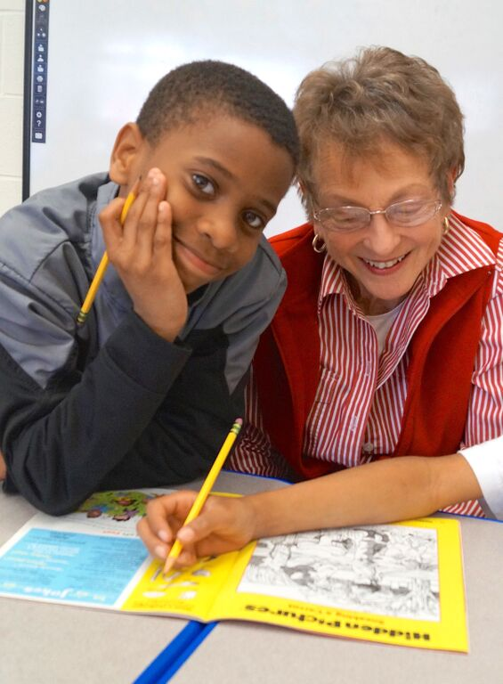

| Individual Comments | In the News | |
|---|---|---|
|
Student: "I can't imagine how I ever survived without my tutor. She really cares about me and wants me to do well in school." BJM parent: "My daughter's tutor tailored a special program for her that changed her view of who she is as a person. She knows she is smart but now she feels important, special and proud of herself. As a single parent working a minimum wage job, I could never provide all of this for her." Dr. Luvelle Brown, Superintendent: "Fortunately, our school district has a strong connection with the leadership and volunteers associated with GO. Students benefiting from GO have demonstrated progress in reading, writing, and mathematics." Cayuga Heights Principal Brad Pollack: "I have observed firsthand what a valuable connection that the tutors establish with their students. Each GO tutor becomes a surrogate family member, meeting with their young person regularly and showing a genuine interest in the life of the student they are paired with, so that each student now has a tutor, coach, mentor and friend. What young person wouldn't benefit from having another trusted adult cheering for them in their corner?" Dr. Judith Pastel, former Superintendent: "GO is unique in that it intervenes early in a child's educational career, before they fall behind and begin to doubt their own abilities." South Hill teacher Jen Wilkie: "GO tutors weave a bond of commitment to a child's future that is a rare gift. I watch the impact these relationships have on children, their growing self-esteem, their empowered way of viewing their education and the impact is truly profound. A gift of a lifetime is what comes to mind. This program is truly a golden opportunity." |
The Power of Afterschool Learning 8-25-15 contains a nice section on GO Ithaca Times 9-11-2013 AARP Bulletin 3/2011: Marty Kaminsky Gives Kids a Golden Opportunity Ithaca Times 2/23/2011  |
|
|
A sampling of parent and guardian comments: Father of a South Hill second grader: My son had been afraid of failing, but not anymore. His whole attitude has changed. He is more apt to pick up a book and is now willing to try other approaches. I cannot say enough for the job Mrs. Gelberg has done. I see her on Tuesdays and Thursdays when I pick him up and we always talk. She is not a bluffer. She even gives me confidence. Mother of a Boynton sixth grader:I love the GO tutoring program. I love the support it provides. I wish many more kids could have the experience of the program because it is so awesome. Mrs. Hatt has helped my daughter so much with math that her confidence is much better. Mrs. Hatt is like a friend to her-she even comes to her music concerts. Guardian of DeWitt sixth grader: His confidence is building and his reluctance is diminishing over time. His tutor is reinforcing exactly what he needs; she is a tremendous support. She provided him with a folder and that was brilliant to help him organize his schoolwork. It helped him feel like he has control. Mother of fifth grader at BJM:Without GO, my daughter wouldn't be anywhere near where she is now. She'd be passing fifth grade, but just barely, with her ADHD. Miss Sheila has had a great impact on her. She tailored a special program for her that changed her view of who she is as a person. She knows she is smart but now she feels important and special. Now she feels proud of herself. As a single parent working a minimum wage job, I could never provide this for her. Miss Sheila gives her so much more and she is a friend, a real person, too. |
||
Photos courtesy of Jo Todd unless otherwise ascribed